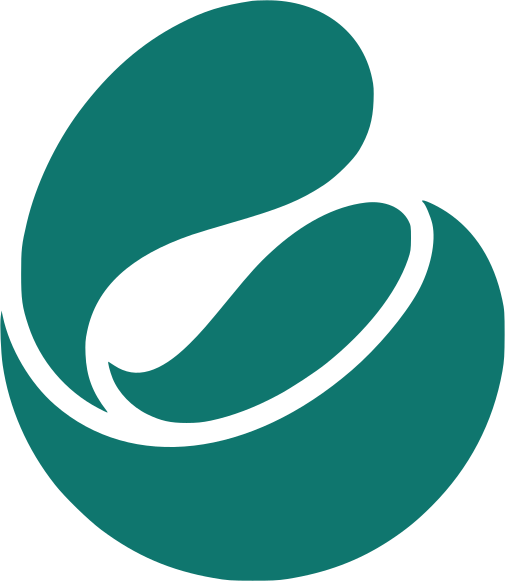

Para Android™
Nomad: guía de viajes
iPhone
Android
¿Tienes Android™?
Te necesitamos.
Ya en iPhone.
Falta Android.
12 personas,
14 días.
Tu viaje,
contado al oído.
Pruébala gratis,
antes de que salga.

Nomad: guía de viajes
Comenta
ANDROID
y te escribimos con los pasos
Para Android™ · Solo mayores de 18
Secuencias acortadas. iPhone es una marca comercial de Apple Inc., registrada en EE. UU. y en otros países. Google y Android son marcas comerciales de Google LLC.